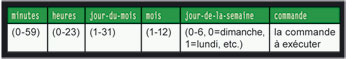

Crontab : utilisation
Contents
1 Introduction
En bref : à exécuter des tâches périodiques de manière automatisée.
En long : crond est un démon qui tourne sous la plupart des distributions Linux et dont la fonction est de gérer certaines tâches périodiques. En cela, un cronjob est une tâche périodique définie par l'utilisateur, qui sera exécutée par le système (ou qui a été prédéfinie par les auteurs de la distribution Linux que vous utilisez).
Considérons un exemple simple : nous allons faire en sorte de nous envoyer le même e-mail tous les matins...
| |
Moi@machine:~$ echo "La vie est belle !" |
Bon, à ce stade, nous n'en sommes qu'à la rédaction du mail et rien n'est encore automatisé. Pour pouvoir automatiser une tâche, il faut l'indiquer à cron, dans des fichiers spécifiques appelés « crontabs » ; chaque utilisateur dispose d'un crontab qu'il gère à sa guise. Pour accéder à votre crontab, tapez :
| |
~$ crontab -e |
Une ligne de commande dans ce fichier est constituée de 6 champs, séparés par des espaces ou des tabulations, dans cet ordre :
]
{kind=link}
La syntaxe des champs peut apparaître différemment selon votre distribution ; ainsi, on trouvera jj ou dom (day of month) pour le jour du mois, mon pour month, etc. Plusieurs éléments d'un même champ sont séparés par une virgule (ex. : 1,3,5 dans le champ mois signifie « janvier, mars, mai ») ; de même, un intervalle s'exprime par un tiret (ex. : 1-3 pour le jour de la semaine signifie « du lundi au mercredi ») ; une étoile (*) désigne le plus grand intervalle possible. Dans notre exemple, si on veut s'envoyer un mail tous les jours le matin à 8 heures 01, on tapera :
| |
01 8 * * * echo "La vie est belle !" |
Si on veut exécuter un script tous les premiers du mois à 5h42 du matin :
| |
42 5 1 * * monscript.sh |
Ou faire une sauvegarde du lundi au vendredi, tous les jours à 11h59 :
| |
59 11 * * 1-5 backup.sh |
Le tout premier rôle de cron est en fait de gérer les tâches d'administration du système. Dans la mesure où celles-ci sont généralement répétitives, c'est assez utile d'avoir un tel système de gestion des tâches à sa disposition... Le fichier de configuration principal de cron est généralement /etc/crontab. Il y a une petite différence avec la syntaxe des crontabs des utilisateurs ; puisque ce fichier de commandes est exécuté en root, la possibilité existe d'indiquer un autre utilisateur que root pour l'exécution des tâches programmées.
La syntaxe des commandes est donc la suivante :
minutes heures jour-du-mois mois jour-de-la-semaine utilisateur commande
Par exemple :
| |
7 20 * * * root echo "Cette commande est exécutée tous les jours en root à 20h07" 7 20 * * * bob echo "Cette commande est exécutée tous les jours par l'utilisateur bob à 20h07" |
Le reste de la syntaxe devrait vous être familier maintenant.
2 Contrôler l'usage de cron
L'utilisation de cron peut entraîner la mobilisation des ressources du système, particulièrement si les tâches administratives sont lourdes et nombreuses (ex. : 50 utilisateurs ayant paramétré un cronjob qui s'exécute toutes les minutes peut occuper pas mal de ressources système...). Pour éviter ça, cron intègre une gestion des autorisations d'usage. Deux fichiers sont utilisés : /etc/cron.deny et /etc/cron.allow. La syntaxe est très simple et identique aux autres démons qui fonctionnent avec des .allow et .deny : pour interdire à un utilisateur particulier l'usage de cron, il suffit d'inscrire son nom dans le fichier cron.deny. Par exemple :
| |
~$ echo "bob" >> /etc/cron.deny |
va interdire à bob l'usage de cron, tout simplement. Pour n'autoriser que certains utilisateurs nommément désignés, on saisira la commande :
| |
~$ echo "ALL" >> /etc/cron.deny && echo "bob" >> /etc/cron.allow |
... et seul bob sera autorisé à utiliser cron. Remarque : si aucun des deux fichiers n’existe, seul le super utilisateur (root) aura le droit d’utiliser cron. Par ailleurs, un fichier /etc/cron.deny vide signifie que tous les utilisateurs peuvent utiliser cron. Le processus crond est normalement lancé au démarrage du système. Pour le vérifier :
| |
~$ ps aux |
C'est bon, apparemment ça tourne ! Vous pouvez également le visualiser sur le gestionnaire graphique de services de votre environnement de bureau. Si le service n'est pas démarré, cochez la case correspondante (via l'interface graphique) ou bien saisissez la commande : /etc/rc.d/init.d/crond start ou /etc/init.d/crond start ou encore /etc/init.d/cron start (selon la distribution utilisée...).
3 Backuper la crontab
J'ai cherché pendant longtemps ce dossier !!! Il y a un dossier ou sont stockées toutes les crontab des utilisateurs :
/var/spool/cron/crontabs
et pour les daily / hourly / monthly... c'est dans ce dossier :
/etc/cron.d
4 Configurer l'email d'une Crontab
Si vous souhaitez qu'une crontab redirige tous les retours à une adresse spécifique, ajoutez alors cette ligne :
| |
MAILTO="user@fqdn" |